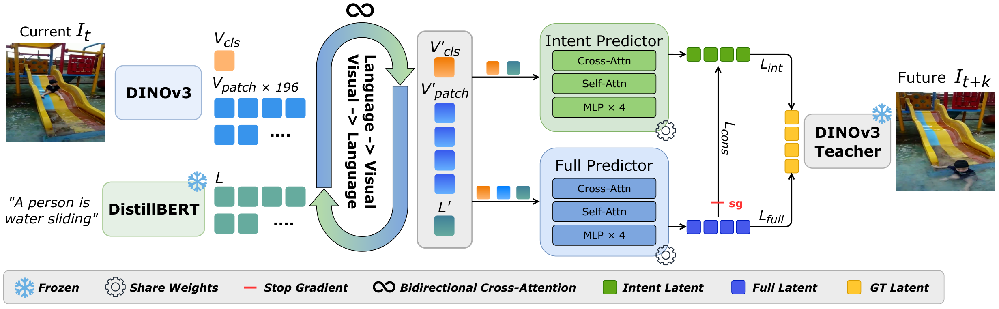
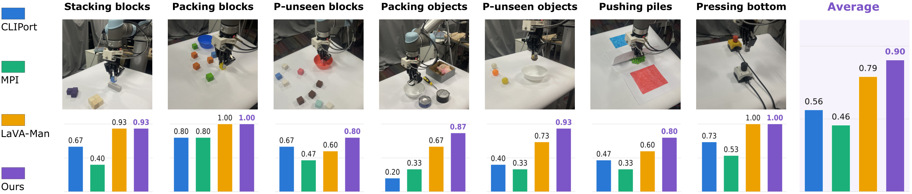
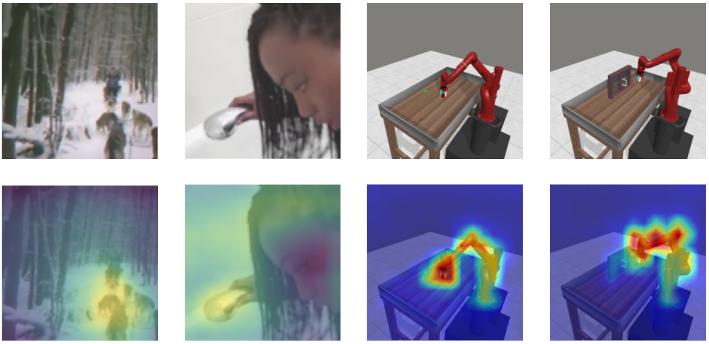
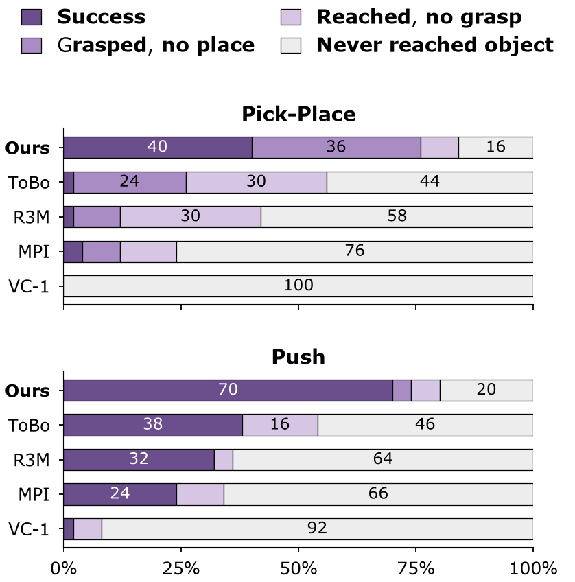

Language-grounded encoding
Bidirectional cross-attention grounds current visual tokens in the task instruction before future prediction.
Task-Relevant residuals as an Action prior for robot manIpuLation
Learning language-conditioned robot manipulation policies requires representations that capture not only the current scene but also how it changes under task instructions. While general-purpose visual representations have improved robotic perception, they are mainly focused on encoding static scenes and provide limited guidance on the temporal dynamics relevant to robotic actions.
We propose a self-supervised framework that extracts task-relevant temporal dynamics as latent residuals that provide a clear and direct target for the robot actions. They are learned through an information-access bottleneck: a single future predictor is run both with and without direct access to dense patch tokens, and the intent stream is distilled from the full-information stream so that prediction emphasizes changes associated with the instruction.
During policy learning, our method bridges the gap between pre-training and deployment by retaining the predictive module to compute an explicit latent residual between the current observation and the predicted future state. This lightweight, control-oriented signal highlights the necessary actions directly and hence simplifies the policy learning process. Experiments on two simulation benchmarks and seven real-robot tasks demonstrate that these latent residuals serve as an effective prior for policy learning.
TRAIL learns a task-relevant latent change predictor from action-free human videos and retains the predictor to provide an explicit transition direction to downstream policies.

Bidirectional cross-attention grounds current visual tokens in the task instruction before future prediction.
The full stream reads class, patch, and language tokens; the intent stream has no direct access to dense patch tokens.
The retained intent stream forms Δz = ẑintt − zt at every control step.
We evaluate TRAIL on Franka Kitchen, Meta-World MT10, and seven physical UR5 tasks under controlled downstream policy-learning protocols.
| Benchmark | Evaluation setting | Strongest compared baseline | TRAIL |
|---|---|---|---|
| Franka Kitchen | 5 tasks, 2 viewpoints, 3 seeds | 79.2 (LaVA-Man) | 81.2 |
| Meta-World MT10 | 1 policy, 10 tasks, 3 seeds | 70.0 (R3M) | 78.2 |
| Physical UR5 | 7 tasks, 5 trials per task | 79.0 (LaVA-Man) | 90.0 |
Average success rates over 25 demonstrations across five tasks, two viewpoints, and three random seeds.
| Method | Turn knob | Open door | Flip switch | Open microwave | Slide door | Average |
|---|---|---|---|---|---|---|
| DINOv3 | 79.3 | 43.7 | 92.3 | 40.3 | 100.0 | 71.3 |
| R3M | 53.3 | 50.7 | 86.3 | 59.3 | 97.0 | 69.5 |
| MVP | 79.0 | 48.0 | 90.7 | 41.0 | 100.0 | 71.7 |
| ToBo | 57.0 | 51.0 | 82.0 | 55.0 | 95.0 | 68.0 |
| MPI | 89.0 | 57.7 | 93.7 | 54.0 | 100.0 | 78.9 |
| LaVA-Man | 90.0 | 50.7 | 94.0 | 61.3 | 100.0 | 79.2 |
| TRAIL | 91.7 | 56.7 | 95.7 | 62.0 | 100.0 | 81.2 |
One language-conditioned policy is trained by offline behavior cloning on 100 expert demonstrations per task. Results are mean success over three seeds and 50 episodes per task and seed.
| Method | Reach | Push | Pick-Place | Door | Drawer-O | Drawer-C | Button | Peg-Insert | Window-O | Window-C | Average |
|---|---|---|---|---|---|---|---|---|---|---|---|
| DINOv3 | 36.0 | 38.0 | 18.0 | 100.0 | 92.0 | 100.0 | 96.0 | 28.0 | 80.0 | 100.0 | 68.8 |
| R3M | 50.0 | 32.0 | 2.0 | 100.0 | 100.0 | 100.0 | 100.0 | 26.0 | 90.0 | 100.0 | 70.0 |
| VC-1 | 32.0 | 2.0 | 0.0 | 80.0 | 86.0 | 36.0 | 28.0 | 2.0 | 22.0 | 100.0 | 38.8 |
| ToBo | 28.0 | 38.0 | 2.0 | 100.0 | 100.0 | 100.0 | 100.0 | 34.0 | 96.0 | 100.0 | 69.8 |
| MPI | 36.0 | 24.0 | 4.0 | 80.0 | 100.0 | 100.0 | 100.0 | 12.0 | 72.0 | 100.0 | 62.8 |
| TRAIL | 44.0 | 70.0 | 40.0 | 100.0 | 100.0 | 100.0 | 100.0 | 33.0 | 95.0 | 100.0 | 78.2 |
Drawer-O/C denote drawer open/close; Window-O/C denote window open/close. Success rates are reported in percent.
A physical UR5 policy is evaluated on seven language-conditioned tabletop tasks, including held-out blocks and objects that are excluded from training.



| Variant | Policy input | Franka Kitchen | MT10 |
|---|---|---|---|
| Encoder-Only | zt | 74.5 | 57.0 |
| Predictor-Only | ẑintt | 75.5 | 77.0 |
| Absolute pair | zt, ẑintt | 76.1 | 76.0 |
| TRAIL (Full) | zt, Δz | 81.2 | 78.2 |